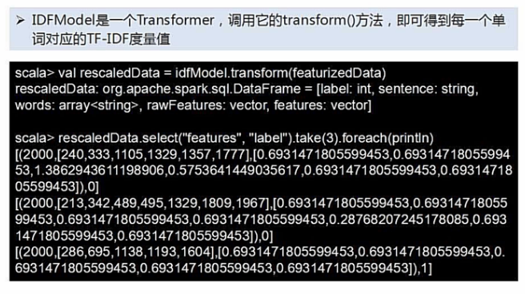
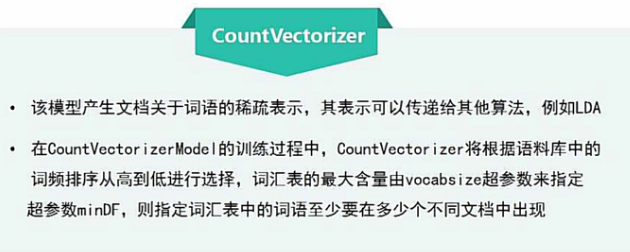
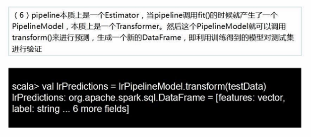
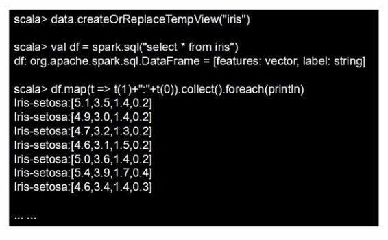

Spark MLlib
Table of Contents
1 Spark MLlib 简介


2 机器学习工作流
2.1 工作流简介
整个 Spark 机器学习库就是针对 DataFrame 进行一次又一次的转换.
DataFrame-1 DataFrame-2 | data | true label | | data | pred label| true label | |------+------------| =====> |------+-----------+------------| | x | 1 | | x | 0 | 1 | | y | 0 | | y | 0 | 0 | | z | 0 | | z | 1 | 0 |
训练数据集 测试数据集(without pred labels)
| |
| |
| |
fit( v ) transform( v )
算法 -----------------> 模型 ------------------> 测试数据集(with pred labels)
^ ^
Estimator Transformer
随机森林, 回归,etc
Estimator, 就可以理解为一个 算法, 调用点 fit()
Pipeline.fit() -—> Pipeline Model
蓝色是 Estimator(各种模型), 红色是 Transformer(各种算法)
2.2 工作流实例
构建训练数据集DataFrame.
sparkSession.createDataFrame( 训练集:seq of vectorized sample ) // 创建无字段名 DataFrame
.toDF( 字段名 ) //创建带字段名的 DataFraem.
- Tokenizer():
- setInputCol("要做tokenize的列名")
- setOutputCol("做完tokenize后输出的列名")
- hashingTF: 把单词映射为向量
- setNumFeatures("hash桶数量,词袋中单词书目")
- setInputCol("要做tokenize的列名")
- setOutputCol("做完tokenize后输出的列名")
- LogisticRegression():
- setMaxIter(最大循环次数)
- setRegParam(0.01)
整个 Pipeline 还没有 fit 数据时, 是一个 Estimator, fit 数据之后就变成了一个 Transformer. 可以进行数据预测(transform).
Estimator -----.fit---> Transformer ---.transform--->
注意,这里 Seq里面是一个个的元组 tuple, 如果不是 tuple 需要调用
seq(xxx).map(Tuple1.apply) 进行转换, 成为 seq of tuples, one sample one tuple,
之后才能够通过 .toDF 转换成 DataFrame.
model.transform(test).select("id", "text", "prob", "pred") // DataFrame可以直接使用类SQL语句的
.collect() // 收集到本地
.foreach{
case Row(id:Long, text:String, prob:Vector, pre:Double):
print(s"($id, $text)-->prob=$prob, pred=$pred")
} // 每个 transformer 产生的都是 Row 集合, 我们从中匹配解析出对应数据
Tokenizer 和 hashingTF 本身就是一个 Transformer, 所以他不需要 fit 数据就可以直接 transfor data points.
3 特征抽取,转化,选择
3.1 IF-IDF
TF-IDF 方法, 用于给单词进行向量化的方法.
注意, 经过某些 transformer 之后, 得到的新列, 是有自己特殊格式的, 比如对于 HashingTF 来说, 得到的新列 "rawFeatures" 的格式就是一个 3-Tuple:
(词袋数量, 向量化的句子, 该句子中每个单词的权重)
| rawFeatures | |-----------------------------------------------------------------------------------------| | (2000, [240, 333, 1105, 1329, 135, 1777], [1.0, 2.0, 2.0, 2.0, 1.0, 1.0]) | ---- --------------------------------- ------------------------------ 词袋中单词数量, 向量化的句子, 单词权重

3.2 word2vec

.map(Tuple1.apply)
"Hi I heard about spank".split("") 生成的是一个数组: array("Hi", "I", "heard", xxx)
DataFrame 需要的是一个元组 tuple, 所以调用这个方法可以把 array==>tuple.
- setInputCol
- setOutputCol
- setVectorSize(3) // Embedding 空间维度
- setMinCount(0) //
3.3 CountVectorizer

4 分类与回归
4.1 logistic regression 分类器

4.2 决策树分类器


